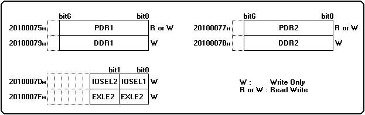

★HARDWARE Manual
★SMPCユーザーズマニュアル
★HARDWARE Manual
★SMPCユーザーズマニュアル
bit７ ０
┌────────────────┐
2010001FH│ ＣＯＭＲＥＧ │Ｗ
└────────────────┘
bit７ ０
┌────────────────┐
20100061H│ Ｓ Ｒ │Ｒ
└────────────────┘
bit７ ０
┌─┬─┬─┬─┬─┬─┬─┬──┐
20100063H│ │ＳＦ│Ｒ／Ｗ
└─┴─┴─┴─┴─┴─┴─┴──┘
bit７ ０
┌────────────────┐┐
20100001H│ ＩＲＥＧ０ ││
├────────────────┤│
20100003H│ ＩＲＥＧ１ ││
├────────────────┤│
20100005H│ ＩＲＥＧ２ ││
├────────────────┤│
20100007H│ ＩＲＥＧ３ │Ｗ
├────────────────┤│
20100009H│ ＩＲＥＧ４ ││
├────────────────┤│
2010000BH│ ＩＲＥＧ５ ││
├────────────────┤│
2010000DH│ ＩＲＥＧ６ ││
└────────────────┘┘
bit７ ０ bit７ ０
┌────────────────┐┐ ┌────────────────┐┐
20100021H│ ＯＲＥＧ０ ││ 20100041H│ ＯＲＥＧ１６ ││
├────────────────┤│ ├────────────────┤│
20100023H│ ＯＲＥＧ１ ││ 20100043H│ ＯＲＥＧ１７ ││
├────────────────┤│ ├────────────────┤│
20100025H│ ＯＲＥＧ２ ││ 20100045H│ ＯＲＥＧ１８ ││
├────────────────┤│ ├────────────────┤│
20100027H│ ＯＲＥＧ３ ││ 20100047H│ ＯＲＥＧ１９ ││
├────────────────┤│ ├────────────────┤│
20100029H│ ＯＲＥＧ４ ││ 20100049H│ ＯＲＥＧ２０ ││
├────────────────┤│ ├────────────────┤│
2010002BH│ ＯＲＥＧ５ ││ 2010004BH│ ＯＲＥＧ２１ ││
├────────────────┤│ ├────────────────┤│
2010002DH│ ＯＲＥＧ６ ││ 2010004DH│ ＯＲＥＧ２２ ││
├────────────────┤│ ├────────────────┤│
2010002FH│ ＯＲＥＧ７ ││ 2010004FH│ ＯＲＥＧ２３ ││
├────────────────┤Ｒ ├────────────────┤Ｒ
20100031H│ ＯＲＥＧ８ ││ 20100051H│ ＯＲＥＧ２４ ││
├────────────────┤│ ├────────────────┤│
20100033H│ ＯＲＥＧ９ ││ 20100053H│ ＯＲＥＧ２５ ││
├────────────────┤│ ├────────────────┤│
20100035H│ ＯＲＥＧ１０ ││ 20100055H│ ＯＲＥＧ２６ ││
├────────────────┤│ ├────────────────┤│
20100037H│ ＯＲＥＧ１１ ││ 20100057H│ ＯＲＥＧ２７ ││
├────────────────┤│ ├────────────────┤│
20100039H│ ＯＲＥＧ１２ ││ 20100059H│ ＯＲＥＧ２８ ││
├────────────────┤│ ├────────────────┤│
2010003BH│ ＯＲＥＧ１３ ││ 2010005BH│ ＯＲＥＧ２９ ││
├────────────────┤│ ├────────────────┤│
2010003DH│ ＯＲＥＧ１４ ││ 2010005DH│ ＯＲＥＧ３０ ││
├────────────────┤│ ├────────────────┤│
2010003FH│ ＯＲＥＧ１５ ││ 2010005FH│ ＯＲＥＧ３１ ││
└────────────────┘┘ └────────────────┘┘
★すべてのレジスタに対してバイトアクセスのみ可
図1.4 パラレルI/Oレジスタ アドレスマップ

| 設定値 | 機 能 |
|---|---|
| 0 | 入力に設定（初期値） |
| 1 | 出力に設定 |
| 設定値 | 機 能 |
|---|---|
| 0 | SMPCコントロールモードに設定（初期値） |
| 1 | SH-2ダイレクトモードに設定 |
 |
SH-2ダイレクトモードの使用は禁止です。 (SH-2ダイレクトモード使用のペリフェラルは除く) |
|---|
| 設定値 | 機 能 |
|---|---|
| 0 | ディセーブル（初期値） |
| 1 | イネーブル |
★HARDWARE Manual
★SMPCユーザーズマニュアル